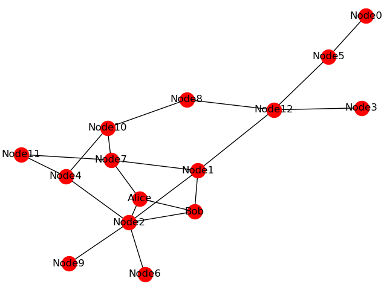

SimulaQron Configuration¶
SimulaQron uses two configuration files:
simulaqron_network.json— defines nodes, their socket ports, and network topology (described on this page)simulaqron_settings.json— configures the simulation backend, timeouts, and other settings (see the Settings section in Configuring Settings)
Running all nodes on a single machine¶
When developing and testing, you typically run all simulated nodes on one computer.
In this case, all sockets use localhost and you just need distinct port numbers for each node.
Using the SimulaQron CLI¶
The simulaqron command manages the backend for you. To start a network with nodes Alice and Bob:
simulaqron start --nodes Alice,Bob
This reads simulaqron_network.json and simulaqron_settings.json from the current directory (or uses
defaults), starts the virtual node servers, the QNodeOS servers, and the classical communication servers for
each node listed.
To stop the backend:
simulaqron stop
If something went wrong (e.g. the process was killed) and SimulaQron thinks the network is still running:
simulaqron reset
The simulaqron start command accepts these arguments:
--nodes <nodes_list>(optional): Comma-separated list of node names to start. These must exist in the network configuration file. If not given, SimulaQron will start all the defined nodes insimulaqron_network.json.--simulaqron-config-file=PATH(optional): Path to a SimulaQron settings file. Defaults tosimulaqron_settings.jsonin the current folder.--network-config-file=PATH(optional): Path to a network configuration file. Defaults tosimulaqron_network.jsonin the current folder.--network-name=<network-name>(optional): Name of the network to start (must match a name in the config file). Defaults todefault.
Warning
simulaqron start will fail if any of the ports specified in the config files are already in
use by a running SimulaQron network or another program.
Using per-example run scripts¶
Each example in examples/new-sdk/ and examples/native-mode/ includes a run.sh script that starts
the SimulaQron backend and launches the node programs. This is the easiest way to try an example:
cd examples/new-sdk/corrRNG
bash run.sh
The run.sh script reads the simulaqron_network.json and simulaqron_settings.json in the example
directory, so each example is self-contained.
Running nodes on separate machines¶
To simulate a real distributed quantum network, you can run each node on a different physical computer. In this case, you need to:
Use real hostnames/IPs instead of
localhostin thesimulaqron_network.jsonfile. Each node’s sockets must be reachable from the other machines.Copy the same
simulaqron_network.jsonto every machine. All nodes must agree on the network configuration.Start only the local node on each machine. On the machine running Alice:
simulaqron start --nodes Alice
On the machine running Bob:
simulaqron start --nodes Bob
Run your node program on each machine after the backend is started.
An example simulaqron_network.json for a distributed setup:
{
"default": {
"nodes": {
"Alice": {
"app_socket": ["192.168.1.10", 8000],
"qnodeos_socket": ["192.168.1.10", 8001],
"vnode_socket": ["192.168.1.10", 8004]
},
"Bob": {
"app_socket": ["192.168.1.20", 8000],
"qnodeos_socket": ["192.168.1.20", 8001],
"vnode_socket": ["192.168.1.20", 8004]
}
},
"topology": null
}
}
Note
When running on separate machines, the port numbers can be the same on each machine since they bind to different IP addresses.
Configuring the network¶
The network configuration file (simulaqron_network.json) defines nodes and their socket assignments.
For each node, you specify IP and port for three sockets:
app_socket— classical communication between application-level nodesqnodeos_socket— connection to the QNodeOS server that interprets NetQASM subroutinesvnode_socket— connection to the SimulaQron VirtualNode that runs the quantum simulation
You can easily copy the default network configuration by using the simulaqron CLI command:
simulaqron nodes default
This will create a simulaqron_network.json file in the current folder with 5 nodes: Alice,
Bob, Charlie, David and Eve.
Using the CLI to add nodes¶
You can build up a network incrementally using the CLI:
simulaqron nodes add Maria
This adds Maria to the default network with random ports on localhost. To add to a different network:
simulaqron nodes add Maria --network-name="OtherNetwork"
You can also specify explicit hostnames and ports:
--hostname--app-port--qnodeos-port--vnode-port--neighbors
Writing the JSON config manually¶
For more complex setups, write the simulaqron_network.json file directly.
Here is an example with two networks (“default” and “small_network”):
{
"default": {
"nodes": {
"Alice": {
"app_socket": ["localhost", 8000],
"qnodeos_socket": ["localhost", 8001],
"vnode_socket": ["localhost", 8004]
},
"Bob": {
"app_socket": ["localhost", 8007],
"qnodeos_socket": ["localhost", 8008],
"vnode_socket": ["localhost", 8010]
}
},
"topology": null
},
"small_network": {
"nodes": {
"Test": {
"app_socket": ["localhost", 8031],
"qnodeos_socket": ["localhost", 8043],
"vnode_socket": ["localhost", 8089]
}
},
"topology": null
}
}
Place this file in the same directory as your code and name it simulaqron_network.json.
Alternatively, load a custom path in your Python code:
from simulaqron.settings import network_config
network_config.read_from_file("/path/to/your/simulaqron_network.json")
Network topologies¶
Each network configuration contains a "topology" entry that defines which nodes can communicate
quantum information with each other. Setting it to null means fully connected (every node can reach
every other node).
A custom topology is specified as a dictionary of adjacency lists:
{
"Alice": ["Bob"],
"Bob": ["Alice", "Charlie"],
"Charlie": ["Bob"]
}
This describes a network where Alice is adjacent to Bob, Bob is adjacent to Alice and Charlie, and Charlie is adjacent to Bob.
Note
Directed topologies are also supported. For example, Alice can send a qubit to Bob but Bob cannot send a qubit to Alice.
Generate network topologies¶
SimulaQron can automatically generate certain well-known network topologies:
complete: Fully connected (default if no topology is specified)ring: Every node has exactly two neighbors, forming a cyclepath: Every node has at most two neighbors, no cyclesrandom_tree: A random tree (connected, no cycles)random_connected_{int}: A random connected graph with a specified number of edges (e.g.random_connected_20for 20 edges). The number of edges must be between \(n-1\) and \(n(n-1)/2\) for \(n\) nodes.
Note
Topology generation via the CLI is planned but not yet implemented. For now, specify topologies
directly in the simulaqron_network.json file (see Network topologies above).
Along with setting up the network with the specified topology a .png figure is also generated and stored as config/topology.png. This is useful if a random network is used, to easily visualize the network used.
The network that is then started might look like this:
{kind=link}

To create a custom topology, see section Network topologies above.
Starting multiple networks¶
To run multiple networks at the same time, give them different names in the network configuration file
and use the --name flag:
simulaqron start --name NETWORK --nodes Alice,Bob
To stop a specific network:
simulaqron stop --name NETWORK
Note
By default the network name is “default”. To have multiple networks running at the same time the nodes cannot use the same port numbers.
The JSON configuration file can hold more than one network configuration. See Writing the JSON config manually above for an example with multiple networks.